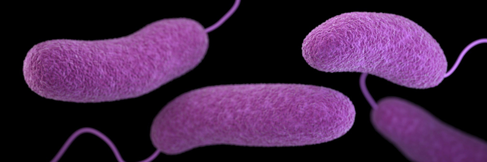

PH-2
Continue assessments of human and environmental health indicators suitable for Tampa Bay beaches and other recreational waters
OBJECTIVES:
Support and monitor research into microbial indicators of waterborne pathogens harmful to human and environmental health. Support and monitor advancements in analytical techniques to directly detect, identify and track waterborne microbial pathogens. Support adoption of best available detection, identification and source tracking methodologies. Increase public education and awareness about waterborne fecal pathogens, beach advisories and best practices to reduce public exposure.
STATUS:
Ongoing. Action revised from Action PH-2 Continue source and risk assessments of human and ecosystem health indicators suitable for subtropical marine beaches and waters.
BACKGROUND:
Tampa Bay Area beaches and recreational waters are nationally recognized for their outstanding natural beauty. They provide recreational opportunities to residents and visitors alike, and support Tampa Bay’s diverse economy, especially its recreation and tourism industries. Maintaining suitable water quality at beaches and other recreational waters is foundational to protecting Tampa Bay’s environment and economy.

Waterborne microbial pathogens (pathogenic microbes) occur naturally in the bay, but many locations experience fecal contamination periodically from various sources including sewer overflows, domestic livestock, pets and humans (see Actions PH-4, PH-5, WW-2, WW-3 and WW-5). Early detection of pathogenic microbes is critical to public health and to public confidence in monitoring and risk assessments of health threats.
Bacteria, viruses and protozoa can cause a variety of human illnesses ranging in severity from rashes, ear, nose and throat infections and diarrhea to antibiotic-resistant infections, cholera and typhoid fever. Some naturally occurring bacteria (e.g. Vibrio vulnificus) may also pose human health concerns for those who consume raw seafood or have suppressed immune systems. Increasing water temperatures due to climate change may enhance susceptibility to these bacterial infections and facilitate the introduction of potential new pathogens from tropical environments.

Fecal coliform bacteria, especially Escherichia coli (E. coli) are widely used as indicators for waterborne pathogens. Coliform bacteria occur naturally in animal feces, and when detected in high concentrations may indicate the presence of co-occurring harmful pathogens. However, because they are present in the feces of a wide variety of animals, they do not pinpoint human sources of contamination. Moreover, Florida’s subtropical climate allows fecal coliforms to grow and multiply naturally in the environment. These shortcomings can reduce the consistent predictive value of the presence of coliform bacteria as an indicator of more harmful pathogens and their threats to human health.
A study of alternative, more accurate indicators of pathogens sponsored by the Tampa Bay Estuary Program (TBEP) and Pinellas County identified enterococci bacteria (Enteroccocus species) as the best fecal indicator bacteria for subtropical marine waters (Rose et al. 2001), because 1) they have a greater correlation with water-related gastrointestinal illness in both marine and freshwater than other fecal indicator bacteria, and 2) they can survive longer in saltwater. However, because enterococci bacteria are shed in feces of all warm-blooded animals, they cannot be used to pinpoint human contamination sources. The study ultimately recommended the use of enterococci, along with fecal coliform bacteria, while proposing source tracking of fecal coliform to fingerprint the types of bacteria originating from human sources.
Rose, J. B., J. H. Paul, M. R. McLaughlin, V. J. Harwood, S.Farrah, M.Tamplin, and G.Lukasik. 2001. “Healthy Beaches Tampa Bay: Microbiological Monitoring of Water Quality Conditions and Public Health Impacts.” 03-01. St. Petersburg, Florida: Tampa Bay Estuary Program. https://drive.google.com/file/d/12cfmGcr1u_W7j5nf12D9O6X0H4fVUtgC/view?usp=drivesdk.
Currently, both the U.S. Environmental Protection Agency (EPA) and the Florida Department of Environmental Protection (FDEP) use E. coli as an indicator of bacterial contamination in freshwater systems, and enterococci for marine waters.
Note
Because of the importance of water quality to local economies many counties and municipalities assumed responsibility for performing their own beach water testing when the state reduced funding for monitoring.
Area county health departments collect water samples weekly at area beaches and analyze them for enterococci and fecal coliform bacteria. City and county water quality departments assist in collecting these samples. Area health departments issue advisories or warnings when conditions warrant, although a consistent link between exposure to indicator organisms and public health risk remains elusive.

Although great gains in protecting public health have been made using fecal indicator bacteria, viral pathogens may actually cause a significant portion of waterborne illness. Because viruses and bacteria respond differently to water treatment processes and environmental degradation, traditional fecal indicator bacteria may not be good indicators for their presence. Research into bacteriophages, or viruses that infect and replicate within bacteria, hold promise for developing better indicators of viral pathogens. EPA suggested that coliphages (viruses that infect and replicate within E. coli) may be better indicators of viruses in fecal contamination and may yield more accurate methodologies for evaluating water quality and protecting public health (U.S. Environmental Protection Agency 2015).
U.S. Environmental Protection Agency. 2015. “Review of Coliphages as Possible Indicators of Fecal Contamination for Ambient Water Quality.” EPA-820-R-15-098. Washington, D.C.: Unites States Environmental Protection Agency. https://www.epa.gov/sites/default/files/2016-07/documents/review_of_coliphages_as_possible_indicators_of_fecal_contamination_for_ambient_water_quality.pdf.
Advances in direct pathogen identification methodologies coupled with microbial source tracking may soon revolutionize water quality analysis for human health risks. Locally, the Environmental Protection Commission of Hillsborough County (EPCHC) is funding a microbial source tracking study of fecal contamination in the Bullfrog Creek/Sweetwater Creek watersheds. Results will help pinpoint specific sources and inform reduction or prevention strategies.
New methodologies can now detect and identify the genetic material from multiple pathogens in water samples (Li et al. 2015). This direct, multi-target approach has the added benefit of eliminating false negatives (i.e., concluding waters are safe, when they may not be) from measuring the wrong indicator or pathogen.
Li, X., V. J. Harwood, B. Nayak, C. Staley, M. J. Sadowsky, and J. Weidhaas. 2015. “A Novel Microbial Source Tracking Microarray for Pathogen Detection and Fecal Source Identification in Environmental Systems.” Environ Sci Technol 49 (12): 7319–29. https://doi.org/10.1021/acs.est.5b00980.
Finally, advances in quantitative PCR (qPCR) as a rapid test for fecal contaminants enable same-day results, providing more timely information to beach-goers.